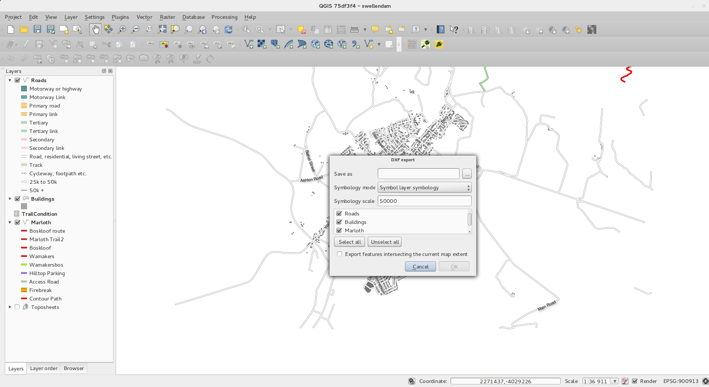
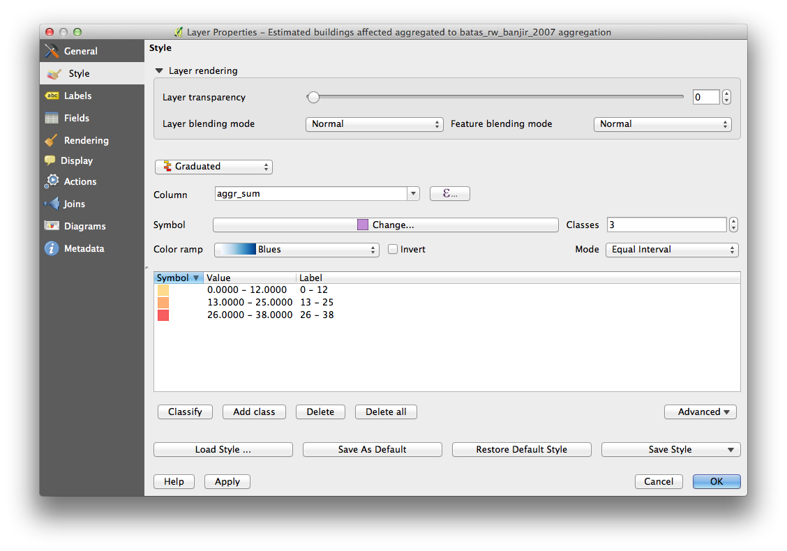

Alterações no QGIS 2.2¶
Registro de alterações para a próxima versão do QGIS 2.2.0. A ênfase deste lançamento foi dada essencialmente no aperfeiçoamento e no desempenho – adicionamos várias novas funções, pormenores e melhorias de modo a tornar a interface mais congruente e visualmente mais profissional (esperamos que de mais fácil uso também). O Editor (usado na criação de mapas prontos a imprimir) foi um dos pontos mais focados para torná-lo numa plataforma mais viável na criação de cartografia de qualidade superior.
Sempre que são adicionadas novas funções ao software existe a possibilidade de ocorrerem novos bugs - se encontrar algum nesta versão, por favor comunique-nos através do formulário QGIS Bug Tracker <http://hub.qgis.org>`__.
Gostaríamos de agradecer ao programadores, documentadores, testers, e toda a malta que está por aí que voluntaria o seu tempo e esforço (ou investe em pessoas para o fazer).
From the QGIS community we hope you enjoy this release! If you wish to donate time, money or otherwise get involved in making QGIS more awesome, please wander along to qgis.org and lend a hand!
Finalmente queremos agradecer aos nossos patrocinadores oficial pelo suporte financeiro de valor inestimável que fornecem a este projecto:
- Patrocinador de OURO Asia Air Survey, Japão
- Patrocinador de PRATA: G.A.I.A. mbH, Alemanha
- Patrocinador de PRATA: Estado de Vorarlberg , Áustria
- Patrocinador de BRONZE: www.molitec.it, Itália
- Patrocinador de BRONZE: www.argusoft.de, Alemanha
A current list of donors who have made financial contributions large and small to the project can be seen on our donors list.
If you would like to make a donation or sponsor our project, please visit our sponsorship page for details. QGIS is Free software and you are under no obligation to do so. Sponsoring QGIS helps us to fund our six monthly developer meetings, maintain project infrastructure and fund bug fixing efforts.
- Aplicação e opções de projeto
- Provedores de dados
- Digitalização
- Geral
- Compositor de impressão
- Novidade: Melhorias na borda do mapa estilo zebra
- Novidade: Suporte para rotação de elementos
- Novidade: Melhorias na escala e régua no compositor
- Novidade: Geração de arquivos World
- Novidade: Trabalhando com múltiplos itens
- Novidade: Melhorias no Atlas
- Novidade: Aperfeiçoado a seleção de item
- Novidade: Melhor navegação de composições
- Novidade: Melhoramento no estilo de páginas e formas
- Servidor QGIS
- Simbologia
- Novidade: Suporte para preenchimento em gradiente
- Novidade: Suporte de rótulo para paleta em raster
- Novidade: Rampa de cores pode ser invertida
- Novidade: Copiar e colar um estilo baseado em regra
- Novidade:Recurso de generalização on-the-fly
- Novidade: Pontos âncoras podem ser ajustados para marcadores
- Novidade: Mapas temáticos baseados em expressões
- Novidade: Suporte para expressões nos diagramas de símbolos para tamanho e atributos:
- Novidade: Regra Else em estilos baseados em regra
- Feature: Apoio de traçado interno para polígonos:
- Interface de usuário
Aplicação e opções de projeto¶
Novidade: Suporte para medidas em milhas naúticas¶
Para você marinheiro e demais, você agora pode medir distâncias utilizando milhas náuticas como unidade de medida. Para habilitá-lo, use o Configurações -> Opções -> Ferramentas de mapa no painel de opções.

Provedores de dados¶
Novidade: Criando uma ou mais relações¶
Essa versão apresenta a capacidade de definir relações 1:n.As relações são definidas no diálogo das propriedades do projeto. Quando existirem relações para uma camada, um novo elemento de interface do usuário na vista de formulário (p. ex. quando identificar um elemento e abrir o seu formulário) irá listar os elementos relacionados. Isto fornece uma maneira poderosa para expressar p. ex. o histórico de inspeção ao longo de um segmento de tubagem ou estrada. Você pode encontrar mais sobre suporte de relações aqui.

Novidade: Ferramenta para exportar DXF:¶
Uma nova ferramenta para exportação de DXF’s foi acrescentado ao menu Projeto

Novidade: Colar como uma nova camada vetorial¶
É uma atividade comum em SIG criar uma sub-seleção e depois criar uma nova camada a partir da seleção. No QGIS você já pode realizar isto; agora, a funcionalidade é oferecida e permite você criar um novo arquivo ou uma camada temporária do que está na lista de trasferência. SImplesmente selecione algumas feições, copie-as para a sua lista de transferência e depois vá a e escolha ‘Nova camada vetorial’ ou ‘Nova camada temporária’ no submenu. O melhor dessa nova ferramenta é que se você tem feições Well Known Text (WKT) na sua lista de transferência de um outro aplicativo, você pode simplesmente colá-lo no QGIS como uma nova camada.

Novidade: Legenda de WMS na lista de camadas e no compositor¶
Versões prévias ao QGIS 2.2 não eram capazes de mostrar a legenda de um WMS na lista de camadas. Similarmente, a legenda não podia ser mostrada no compositor de mapa. O QGIS 2.2 incluiu ambas questões.
Ao clicar sobre legenda da camada um quadro com a legenda em resolução máxima será aberto. A legenda irá exibir informações contextuais com base em sua escala atual. A lenda WMS será exibida somente se o servidor WMS tiver capacidade GetLegendGraphic e a camada for getCapability url especificada, então você tem que selecionar um estilo.

Digitalização¶
Novidade: Ferramenta de preenchimento de anel¶
Esta nova ferramenta é utilizada para cortar vazios em polígonos e preenchê-los automaticamente com novas feições. Se você pressionar Ctrl enquanto finaliza a feição, os atributos serão herdados da feição mais completa.

Geral¶
Novidade: Memorização de expressões recentes¶
O criador de expressões permitirá salvar as últimas 20 expressões utilizadas.

Novidade: Colar WKT da área de transferência¶
Agora o QGIS pode colar e criar uma nova feição baseada no WKT que se encontra na área de transferência. Apenas copie o WKT e cole em uma camada editável. Você pode também criar uma nova camada por seleção Editar -> Colar Como -> Nova Camada Temporária
Compositor de impressão¶
Novidade: Melhorias na borda do mapa estilo zebra¶
Você pode ajustar as cores da borda do mapa estilo zebra no compositor de impressão.

Novidade: Suporte para rotação de elementos¶
Todo tipo de elementos no compositor pode ser rotacionado, incluindo barras de escala, tabelas e legendas. Por exemplo, você pode rotacionar um rótulo na composição para ajustá-lo melhor ao modelo do mapa (como ilustrado). O redimensionamento de elementos rotacionados também foi melhorado.
Novidade: Melhorias na escala e régua no compositor¶
The appearance of rulers has been improved by adjusting the scale logic
and by adding smaller ruler divisions, and by making vertical rulers use
rotated text. There is also a new composer action for hiding/showing
rulers. You can now quickly zoom to 100% page scale using the new
Zoom to 100% tool on the toolbar. The composer window now lets you
quickly switch the page scaling via a new scale combobox in the status
bar. In addition a new indicator has been added to show you the precise
pixel position of your cursor. The Close and Help buttons have
been removed from the bottom of the composer window to give you the
maximum amount of screen space for working with your compositions.

Novidade: Geração de arquivos World¶
No compositor, agora você pode criar mapas georreferenciados! Simplesmente se assegure que escolheu o elemento do mapa correto na aba de composição e exporte seu mapa como um arquivo PNG. Um acompanhamento do arquivo world será criado, permitindo carregar seu mapa no QGIS como uma camada matricial.

Novidade: Trabalhando com múltiplos itens¶
Agora é possível mover e redimensionar múltiplos itens simultaneamente. Para isso, basta pressionar Shift enquanto redimensiona para manter a relação entre os itens, ou Ctrl para redimensionar a partir de um item central. Estes atalhos são também aplicáveis para mover itens, então pressione Shift enquanto move um item no sentido horizontal ou vertical e segure temporariamente Ctrl para desabilitar o ajuste automático dos itens. Você também pode sergurar Shift enquanto pressiona uma tecla para deslocar todos os itens selecionados.
Novidade: Melhorias no Atlas¶
Agora você pode visualizar as páginas individuais dos atlas mapa que serão gerados no compositor. No modo de pré-visualização do Atlas, você pode exportar apenas a página atual sem fazer o mesmo para todo o Atlas. Você também pode ajustar a extensão do mapa ou escala para cada feição enquanto pré-visualiza uma determinada página. As opções do Atlas foram movidas do painel do atlas para o painel das propriedades do mapa, então, agora, mais de um mapa pode ser controlado pela ferramenta de Atlas. Existe uma nova opção para centralizar automaticamente a visão geral do mapa, enquanto se está criando mapas em atlas. Maiores informações estão também disponíveis para você ajustar sua simbologia baseado na funcionalidade do atlas ou não. Veja esse artigo para mais informações.

Novidade: Aperfeiçoado a seleção de item¶
Você pode selecionar mais de um item apenas clicando e arrastando uma caixa para selecionar múltiplos itens, existindo atalhos para permitir adicionar itens a uma seleção já criada (segurando Shift enquanto seleciona), retirando de uma seleção (segurando Ctrl enquanto clica) e alternando para “dentro” do modo de seleção (pressionando Alt enquanto clica). Clique com shift em um item já selecionado o removerá da seleção. Também existem atalhos e menus para selecionar todos os itens, limpar uma seleção e invertê-la. Também é possível selecionar itens que estão escondidos abaixo de outros com um clique com Ctrl no item ou utilizando ‘Selecione o próximo item acima/abaixo’ no novo menu de edição do compositor
Novidade: Melhoramento no estilo de páginas e formas¶
Você agora pode controlar o estilo do fundo da composição utilizando todas as opções da simbologia do QGIS. É possível exportar composições com um fundo transparente (ou semitransparente). Itens de forma (retângulos, triângulos e elipses) podem ser estilizados utilizando as mesmas opções de uma camada de polígono. Você pode, inclusive, estilizar o fundo da página ou as formas usando opções definidas baseadas na ferramenta de atlas! Existe uma nova opção para cantos arredondados dos retângulos.
Servidor QGIS¶
Novidade: Adicionado suporte WCS ao QGIS Server¶
O QGIS Server suporta vários padrões, incluindo Web Map Service (WMS versão 1.3.0 e 1.1.1), Web Feature Service (WFS versão 1.0.0) and Web Feature Service Transacional (WFS-T). Nesta nova versão, você poderá fornecer serviços de camadas matriciais utilizando o padrão Web Coverage Service (WCS versão 1.0.0)) padrão.

Simbologia¶
Novidade: Suporte para preenchimento em gradiente¶
A nova funcionalidade de preenchimento em gradiente permite criar melhores mapas do que antes. Esta funcionalidade tem numerosas opções provendo com grande flexibilidade a forma de aplicar os gradientes às suas feições. Estas incluem:
- Preenchimento em duas cores ou em rampa de cores
- Tela- ou origem baseado em objetos e seus gradientes
- Gradientes originados a partir do centróide de uma feição
- Tipos de gradientes cônico, linear e radial
- Opções de dados definidos (ex. usar uma expressão ou uma coluna da tabela) para todas as propriedades de gradientes.
Leia mais sobre como usar o preenchimento em gradiente aqui.

Novidade: Suporte de rótulo para paleta em raster¶
Rasters que utilizam uma paleta de cores fixas (para instâncias, um mapa de cobertura) podem ter categorias de rótulos nomeadas com o que será mostrado na legenda do mapa e na legenda do compositor.

Novidade: Rampa de cores pode ser invertida¶
Uma nova opção que foi acrescentada às opções de simbologias relacionada às rampas de cores é que permite inverter a rampa após criada

Novidade: Copiar e colar um estilo baseado em regra¶
No renderizador baseado em regra, você pode em um clique com o botão direito do mouse numa regra, copiá-la e colá-la como uma nova regra.

Novidade:Recurso de generalização on-the-fly¶
O QGIS 2.2 introduz o recurso de generalização para o on-the-fly. Isto pode melhorar o tempo de renderização enquanto se desenha inúmeras feições complexas em escala pequena. Este recurso pode ser habilitado ou desabilitado nas propriedades da camada. Existe também uma nova opção geral que habilita a generalização por padrão para novas camadas adicionadas. Nota: O recurso de generalização pode apresentar artefatos no resultado da renderização em alguns casos. Isto pode incluir linhas entre polígonos e uma renderização inexata quando utilizado simbologia com offset.

Novidade: Pontos âncoras podem ser ajustados para marcadores¶
Quando definida a simbologia com marcadores (ex. uma camada de ponto simbolizada com marcadores SVG), você pode especificar qual parte da imagem deve corresponder ao ‘ponto âncora’. Por exemplo, você pode indicar que o canto inferior esquerdo de uma imagem deve coincidir com a posição da feição. Você também pode utilizar as propriedades de dados definidos para ter este conjunto de propriedades em tempo baseado no atrbuto da tabela de uma camada (ou uma expressão arbitrária).

Novidade: Mapas temáticos baseados em expressões¶
Mapas temáticos categorizados ou graduados podem ser criados utilizando como resultado uma expressão. No diálogo de propriedades de uma camada vetorial, o atributo adotado tem sido aumentado com um criador de expressões. Agora, não é necessário escrever a classificação do atributo em uma nova coluna na tabela de atributos se você quer que a classificação do atributo seja composta de múltiplos campos ou um qualquer tipo de fórmula.

Novidade: Suporte para expressões nos diagramas de símbolos para tamanho e atributos:¶
Você pode usar uma expressão para definir o tamanho e atributos quando utilizar as capacidades de construção de diagramas do QGIS. Para mais informações veja Pull Request here Pull 1039

Novidade: Regra Else em estilos baseados em regra¶
O estilo baseado em regra suporta a regra ELSE que rodará se nenhuma outra regra corresponder neste nível. Regras Else podem ser aninhadas, assim como quaisquer outras regras.
Um exemplo pode ser:
type = 'water' (style grey)ELSE (style red)
Feature: Apoio de traçado interno para polígonos:¶
Foi adicionado suporte para o traçado de polígonos a serem limitados no interior do polígono (para não transbordar para um polígono vizinho).
Mais informações sobre essa função pode ser encontrada na segunda parte desse artigo.

Interface de usuário¶
Novidade: Melhorias no diálogo de propriedades¶
Todas as propriedades diálogos tiveram seus menus atualizados para que eles se pareçam mais lisos, com uma barra lateral de cor inversa. Isto é puramente comético, mas deve facilitar as atividades neste diálogo.

Novidade:Melhorias no diálogo de expressões¶
Fizemos alguns ajustes para o diálogo de expressão - usuários avançados podem esconder os botões de operação. Existem também novos divisores entre as áreas da lista de funções, de ajudas e de expressões. Veja o original pull request para mais detalhes.

Novidade: Novas combinações de teclas:¶
Nós atualizamos os atalhos no QGIS para fazê-lo mais eficiente em tarefas repetitivas.
ctrl-d- Remove camadas selecionadas na tabela de atributos>- Seleciona o próximo vértice utilizando a ferramenta de nós<- Seleciona o vértice anterior utilizando a ferramenta de nósDeleteorBackspace- Deletar as feições selecionadas (você pode desfazer estas ações) ou nós utilizando a ferramenta de nósF5Atualiza a tela (ao invés do Ctrl-r)
Veja também Issue 9094 e Pull Request 1010 paramais detalhes.